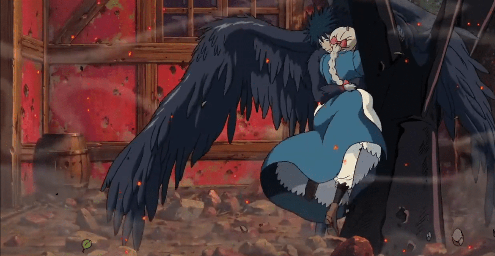

About Sophie
Sophie fofie be dantu. ophie, a young milliner, encounters a wizard named Howl on her way to visit her sister Lettie. Upon returning home, she meets the Witch of the Waste, who transforms her into a ninety-year-old woman. Seeking to break the curse, Sophie leaves home and sets off through the countryside. She meets a living scarecrow, whom she calls "Turnip Head". He leads her to Howl's moving castle, where she enters without invitation. She subsequently meets Howl's young apprentice Markl, and a fire demon named Calcifer, who is the source of the castle's magic as well as its overall movement. When Howl appears, Sophie announces that Calcifer has hired her as a cleaning lady.
Sophie and Howl's embrace
Sophie's charachteristics
- Extremely brave
- Is from low background
- Has strong intuition
Sophie's friends
On her journey she meets some awesome other characters. Click on the links below to read more about it.